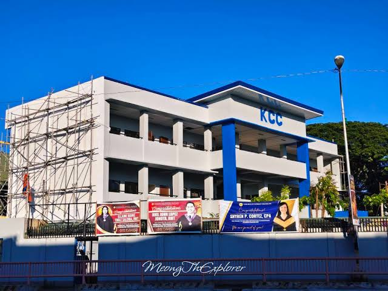
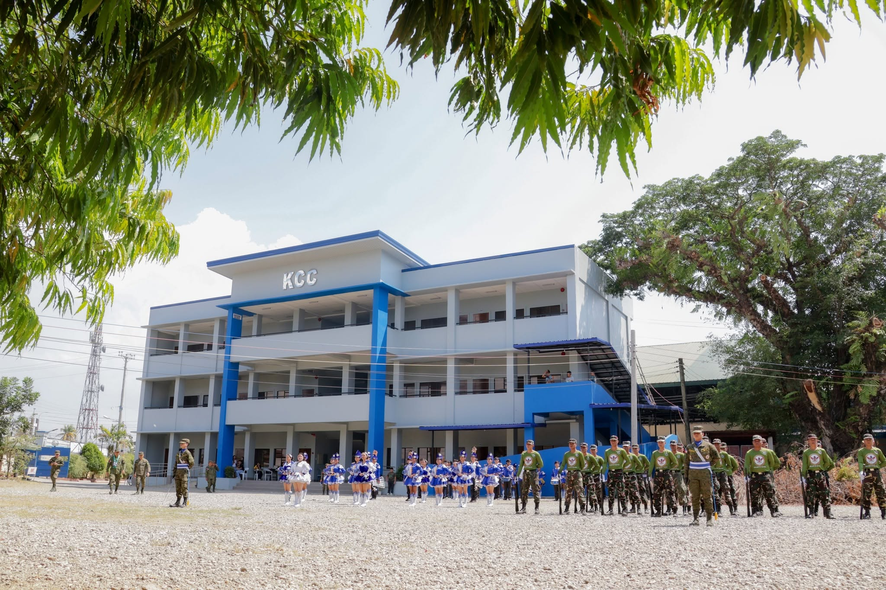
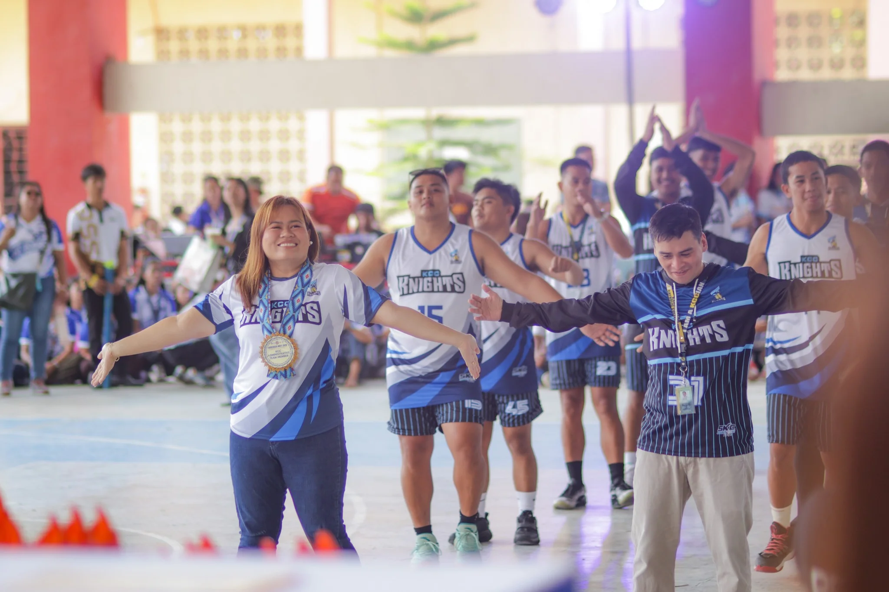
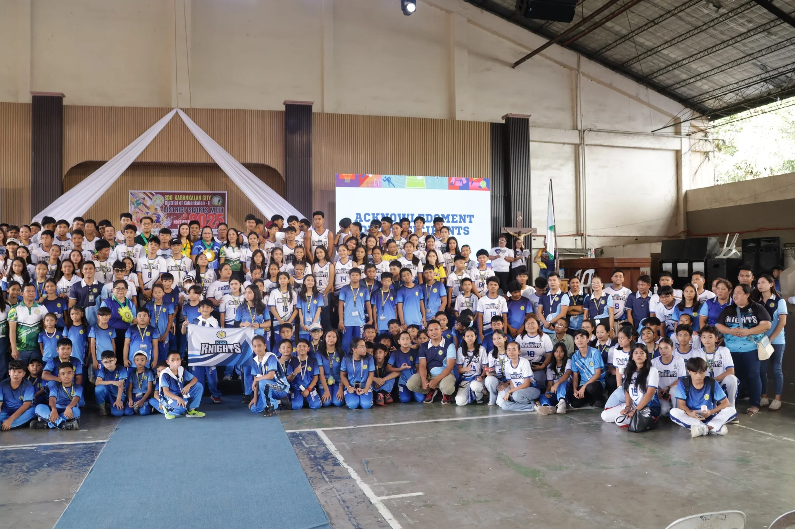
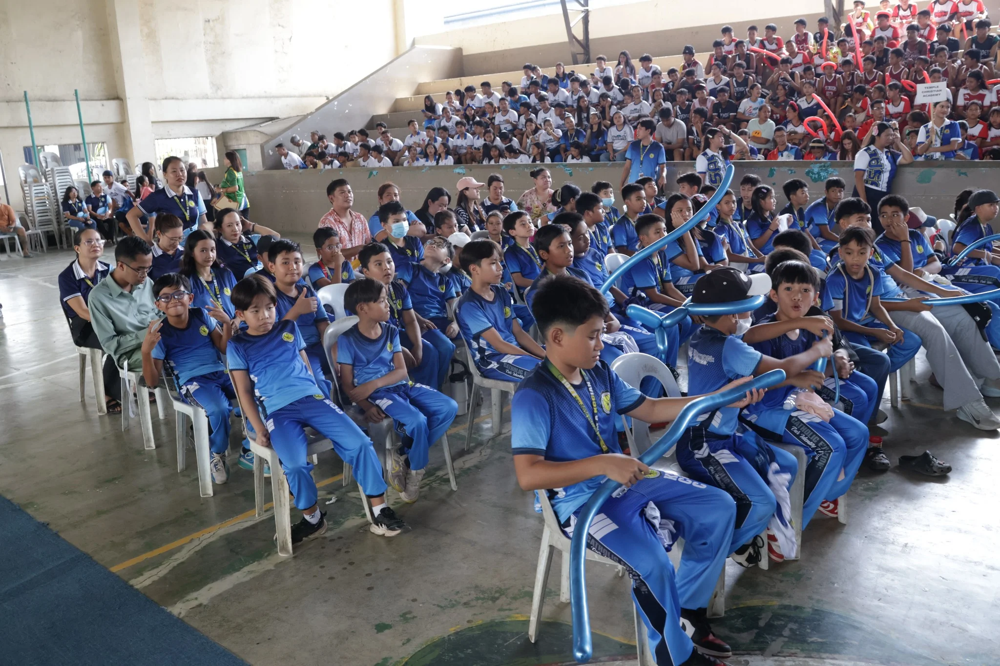

Catholic Education:
Our Identity, Our Mission
A Christ-centered institution forming responsible, service-oriented learners in Kabankalan City.

Formation in Christ for Service to Church and Society
Kabankalan Catholic College, Inc. is a Christ-centered Catholic educational institution in Kabankalan City, Negros Occidental.
- Academic excellence with a strong moral foundation.
- Catholic values integrated across every level of education.
- Socially conscious, responsible, and service-oriented formation.
Founded
Academic Levels
SHS Strands
Years of Service
Why Choose Kabankalan Catholic College?
KCC integrates academic excellence, Catholic values, and community service to form the whole person: mind, body, and soul.
Academic Excellence
Rigorous academics that challenge students to think critically and develop a genuine love for learning.
Faith Formation
Deepening faith through Catholic tradition, prayer, and a personal relationship with God.
Community Service
Reaching out to those in need, putting the Gospel into practice through hands-on service.
Holistic Development
Shaping students who are not only skilled and knowledgeable but also grounded in strong values.
Programs
Learn, Serve, and Lead

Tertiary Education
College Department
College degree programs rooted in academic excellence and Catholic values, preparing graduates for professional careers and community service.

Junior & Senior High School
High School Department
Junior and Senior High School education that develops knowledgeable, faith-filled learners prepared for college, careers, and responsible citizenship.

Basic Education
Elementary Department
Foundational education that nurtures young learners academically, spiritually, socially, and emotionally in a caring Catholic environment.
Our Mission
KCC MissionKCC commits to provide quality and inclusive Catholic education, rooted in the Gospel and driven by innovative research and meaningful community engagements, empowering its members to become effective agents of societal transformation.
Our Vision
KCC VisionKabankalan Catholic College, Inc., as builder of the future, is a Christ-centered learning community of accountable and socially responsible individuals, that leads positive change, responds to and serves the mission of the Diocese, the nation, and the world.